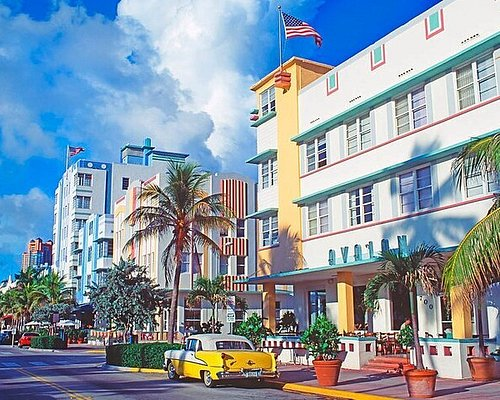
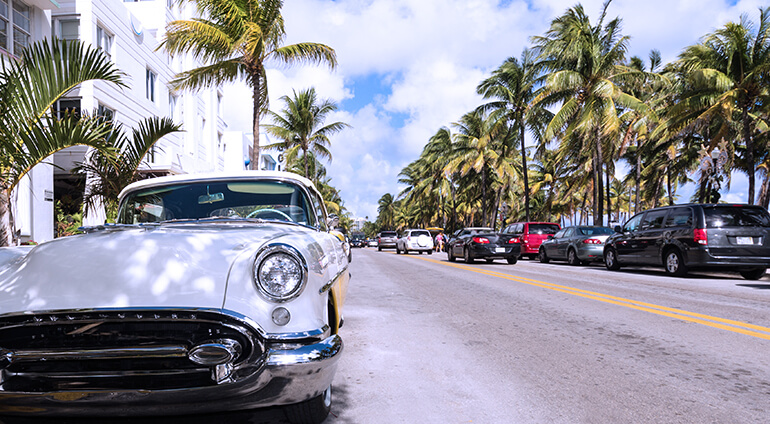
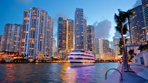

Miami, often referred to as "The Magic City," is a vibrant and culturally diverse metropolis located in southeastern Florida, USA. Known for its stunning beaches, dynamic nightlife, and rich cultural tapestry, Miami stands out as a unique blend of urban sophistication and tropical allure. From its iconic Art Deco architecture to its thriving arts scene, Miami offers a wealth of experiences for visitors and residents alike.
Miami's history is both fascinating and distinctive. It is the only major U.S. city founded by a woman, Julia Tuttle, who played a crucial role in extending the Florida East Coast Railway to the area in 1896. The city's name is derived from the Mayaimi tribe that once inhabited the region around Lake Okeechobee. Miami's population is 467,963 as of 2024. Miami was incorporated on July 28, 1896.
Situated on Biscayne Bay at the mouth of the Miami River, Miami is the southernmost large city in the continental United States. It is surrounded by two national parks: Everglades National Park to the west and Biscayne National Park to the east, making it a unique urban area with access to pristine natural environments. The city is also renowned for its Art Deco architecture, particularly in the South Beach district, which boasts the largest collection of Art Deco buildings in the world.
Miami is a major hub for finance, commerce, culture, and international trade. It has a significant Hispanic and Latino population, with Cuban-Americans forming a substantial part of its demographic fabric. This cultural diversity is reflected in neighborhoods like Little Havana and Little Haiti, which offer vibrant cultural experiences and annual festivals.
Economically, Miami is a powerhouse with a strong presence in international banking and commerce. The Port of Miami is famously known as the "Cruise Capital of the World," handling millions of passengers annually. The city's economy is bolstered by tourism, international trade, and a growing tech scene. The average household income in Miami, Florida is $46,000. The median household income in Miami, FL in 2022 was $60,989, which was 13.6% less than the median annual income of $69,303 across the entire state of Florida. Compared to the median income of $23,483 in 2000 this represents an increase of 61.5%. The per capita income in 2022 was $45,596, which means an increase of 66,8% compared to 2000 when it was $15,128.
Miami's subtropical climate makes it an ideal destination for tourists seeking sunshine and warmth year-round. It holds the distinction of having the warmest winters in the United States, attracting visitors from colder climates during winter months. The city's lifestyle is characterized by outdoor activities such as boating, fishing, and beach sports, alongside a bustling nightlife scene filled with clubs, bars, and restaurants.
In summary, Miami's blend of cultural diversity, economic vitality, historical significance, and natural beauty makes it one of the most exciting cities to explore in the United States. Whether you're drawn by its beaches or its vibrant cultural life, Miami offers something for everyone.
